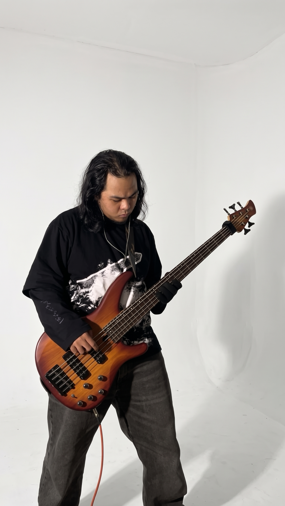

About
Download CV
Curiosity, put
into practice.
AI at university, self-hosting at home, and music in my own time.
A little background.
I moved from Padang to Jakarta to study Artificial Intelligence at BINUS University, Kemanggisan.
I’m interested in locally run AI: language models, diffusion models, and speech technologies. Personal projects give me a reason to explore how model serving, applications, and services fit together.
I’m looking for opportunities to deepen that understanding, learn from a team, and contribute to practical projects.
Learning at BINUS.
Artificial Intelligence
School of Computer Science · Kemanggisan
- Cumulative GPA
- 3.68 / 4.00
- Expected graduation
- July 2028
Relevant coursework
- Machine Learning
- Deep Learning
- Machine Learning Operations
- Applied Natural Language Processing
- Applied Computer Vision
- Artificial Intelligence Solution
View academic details
A in all six selected courses.
Languages
Indonesian · Native
English · IELTS Simulation, overall 6.5
TIME Language Centre, Padang · August 2026
My Ubuntu homelab.
I repurposed an HP Pavilion 14-bf0xx into an Ubuntu homelab for personal projects and experimentation.
It hosts Mordred’s backend, a Minecraft server, and an image-generation interface connected to the ComfyUI API, with remote access through Tailscale. I use it to practise service configuration, deployment, and troubleshooting.
- Mordred backend
- Minecraft server
- Image-generation interface
The setup
- Machine
- HP Pavilion 14-bf0xx
- Processor
- Intel Core i5-7200U · 2 cores / 4 threads
- Memory
- 8 GB
- Graphics
- NVIDIA GeForce 940MX / Intel HD Graphics 620
- System
- Ubuntu 24.04 LTS · Server CLI
- SSD
- 256 GB
- HDD
- 1 TB
Outside university
Low frequency aficionado.
Bass is my main instrument. I also play guitar, mainly covering metal and J-pop.
I played in a band during high school and still enjoy learning bass parts, trying different tones, and recording covers in REAPER.

Try the five-string bass demo
Five strings. Give them a try.
Standard B–E–A–D–G tuning for this interactive demo.
Sound starts when you play.
Instruments, recording tools & more photos
What I play through.
My current instruments and recording tools.